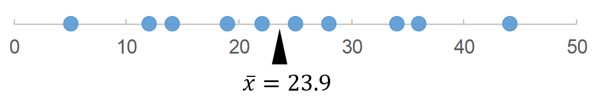
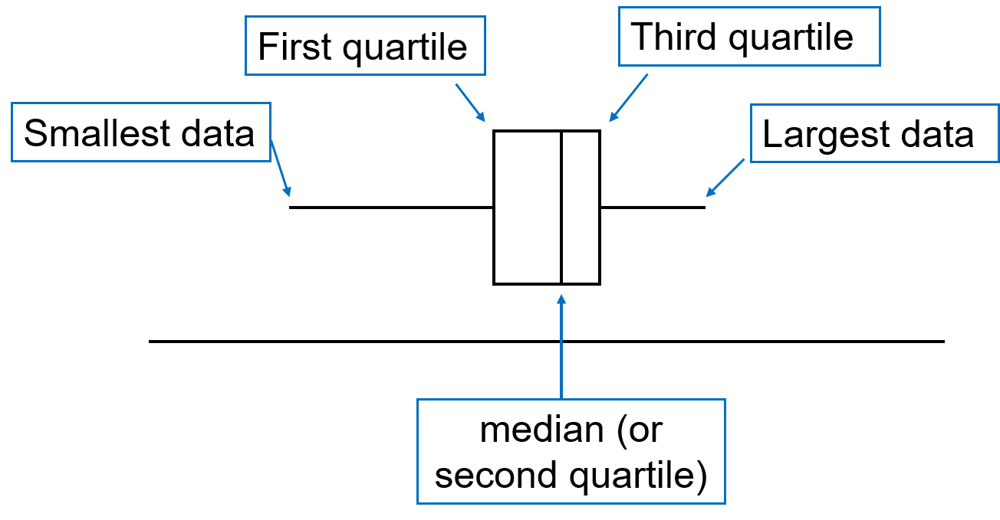

\[19882, 19728, 19335, 19287, \cdots, 617, 555, 529, 242\]
What is the typical height of a volcano?
Describe & summarize important features of the data.
For a given set of \(n\) numbers
\[x_1, x_2, \cdots, x_n\]
the sample mean \(\bar{x}\) is given by
\[\bar{x} = \frac{1}{n}(x_1 + x_2 + \cdots + x_n)\]
We often use the shorthand sigma notation
\[\bar{x} = \frac{1}{n}\sum_{i=1}^n x_i\]
\[12, 34, 14, 5, 44, 28, 22, 19, 36, 25\]
\[\bar{x} = \frac{1}{10}(12 + 34 + \cdots + 25)=23.9\]

Interpretation: the center of gravity for a series of weights positioned at the specified values in a dot plot.
\[50, 50, 50, 50, 50, 50, 50, 50, 50, 550\]
\[\bar{x} = \frac{1}{10}(50\times9 + 550\times1)=100\]
\[50, 50, 50, 50, 50, 50, 50, 50, 50, 550\]
Sample mean is sensitive to the presence of outliers1, especially for small data sets.
The median, \(\tilde{x}\) (reads x tilde), is the middle value in a set of data that is arranged in order.
If the sample size \(n\) is an even number, there are two middle values.
\[1, 3, 4, 6, 8, 9\]
\(\tilde{x}\) is the average of the two.
Data set:
\[12, 34, 14, 5, 44, 28, 22, 19, 36, 25\]
Sort the data to order:
\[5, 12, 14, 19, 22, 25, 28, 34, 36, 44\]
\[\tilde{x} = \frac{1}{2}(22+25)=23.5\]
Interpretation: half of the data are smaller than 23.5, half are larger than 23.5.
\[50, 50, 50, 50, 50, 50, 50, 50, 50, 550\]
\[\tilde{x} = \frac{1}{2}(50 + 50)=50\]
The value below which \(x\%\) of the data will be found.
\[\text{Percentile} = \frac{r-0.5}{n}\times100\]
| \(\text{Rank }(r)\) | \(x_i\) | \(\text{Percentile}\) |
|---|---|---|
| \(1\) | \(5\) | \(5\text{th}\) |
| \(2\) | \(12\) | \(15\text{th}\) |
| \(3\) | \(14\) | \(25\text{th}\) |
| \(\cdots\) | \(\cdots\) | \(\cdots\) |
| \(8\) | \(34\) | \(75\text{th}\) |
| \(9\) | \(36\) | \(85\text{th}\) |
| \(10\) | \(44\) | \(95\text{th}\) |
The mean after discarding the smallest & largest \(\alpha\%\) of the data
Dive scores from 7 judges:
\[4, 6, 6, 6, 7, 7, 8\]
The lowest and highest scores are eliminated.
\[6, 6, 6, 7, 7\]
The remaining scores are totaled.
\[6+6+6+7+7=32\]
Typically \(\alpha\%\) is between 5 to 25%.
When discarding the bottom 25% and top 25%, it is called the interquartile mean.
The sample mean and median can be considered as two special cases of trimmed mean.

Go to Google Colab and sign in. Open a new notebook.
We use the NumPy library.
We use the pandas library.
import pandas
url = "https://imse317.github.io/lecture-slides/ch01/data/bank.csv"
bank = pandas.read_csv(url)
bank.head()